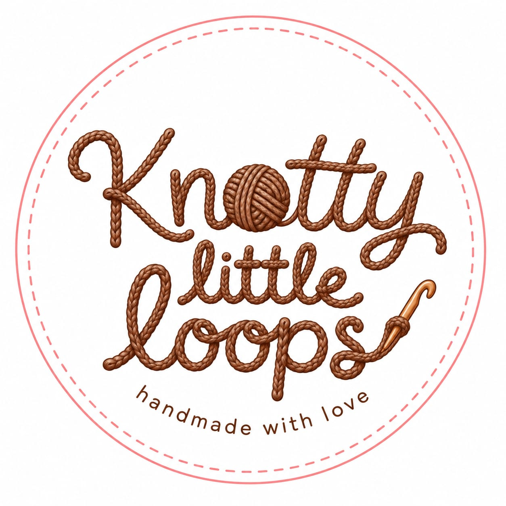
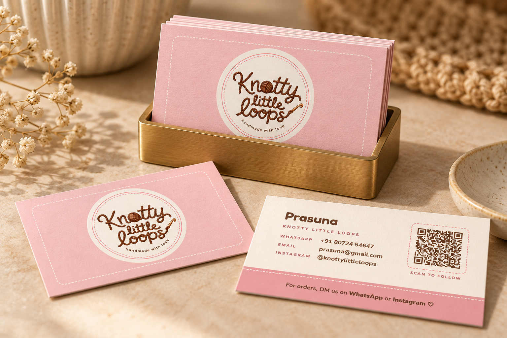
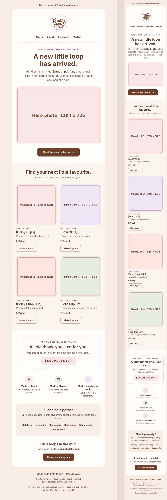
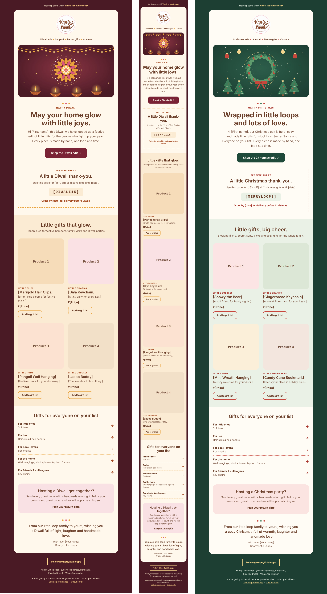

Women 20-40 years of age
Needed a brand that felt polished enough for gifting, personal accessories and home accents, while still feeling intimate and handmade.
Case study: crochet brand identity
Knotty Little Loops is a small business creating handmade crochet products across soft toys, hair clips, charms, bag decor, bookmarks, home accents and custom gifts. The brand identity was designed to feel tactile, friendly and giftable for women 20-40 years of age, while still carrying enough playfulness to appeal to kids 10-16 years of age.


The opportunity
Crochet products carry strong emotional cues: they are handmade, textured, slow-crafted and often purchased as gifts. The identity therefore needed to avoid two extremes: looking too generic and craft-fair casual, or becoming overly childish because many products appeal to younger buyers.
The brand guidelines created a repeatable system for product storytelling, shopping moments, seasonal campaigns and in-person sales. The goal was to help the business look consistent across touchpoints without losing the personal warmth of handmade work.
Needed a brand that felt polished enough for gifting, personal accessories and home accents, while still feeling intimate and handmade.
Needed moments of color, character and playfulness through product names, collection language and accent graphics.
Needed a flexible visual system that could work across website sections, emails, visiting cards and flea-market communication.
Positioning and voice
The positioning was built around tactile keywords: little, loop, handmade, cozy, soft, playful, crafted, charm, cuddle, stitch, yarn, joy, gift and special. These words shaped both the verbal system and the visual direction.
Instead of making every touchpoint pink or decorative, the system uses warm white and brown as the foundation, with blush, lavender, sage and peach as controlled accents. This keeps the brand appealing to adult shoppers while creating enough delight for teen and kid-oriented products.
The brand identity was created with the support of AI after the core research direction was established. I conducted the user research, derived the foundational brand keywords and identified the primary color direction from that research. AI was then used as a production and iteration partner to generate the logo, website layout, emailers and print collaterals, with refinements made through prompting until each piece aligned with the brand guidelines.
Identity design
The new logo uses yarn-like lettering to make the craft visible before the viewer reads the supporting copy. The yarn-ball "o" signals crochet immediately, while the hook detail reinforces the handmade process. The circular badge and stitched border make the mark suitable for stickers, product tags, visiting cards, packaging and social profiles.
The logo keeps the brand playful without becoming childish. Brown gives the mark warmth and materiality, while the soft pink border adds friendliness and approachability for a gifting-led handmade business.
The identity needed to feel handmade at first glance, but disciplined enough to support a full business system across digital campaigns and physical sales moments.
System foundations
The brand guide defines logo usage, spacing, color roles, typography, tone of voice, photography direction, illustration language, UI components and print principles. The system uses Fredoka for expressive headings and Nunito Sans for readable body and UI content, letting the custom yarn logo remain the visual hero.
Warm white and brown carry most of the system; blush, lavender, sage and peach act as accents.
Keeps the brand mature, soft and flexible across product categories.
Fredoka supports playful campaign moments; Nunito Sans keeps longer content readable.
Balances kid-friendly warmth with professional ecommerce clarity.
Warm daylight, honest materials, close-up texture and minimal props.
Lets the crochet texture and handmade quality carry the emotion.
Stitch lines, yarn paths, loops and small crochet motifs are used selectively.
Creates recognition without over-decorating every surface.
Website and email system
The website layout establishes the product world: collections, bestsellers, brand story, handmade proof points, custom orders and social discovery. The emailer system extends the same visual language into subscriber communication, with one template focused on new arrivals and product categories and another adapted for occasion-led campaigns such as Diwali and Christmas.
A warm ecommerce layout for discovery, product storytelling and custom orders.
The website uses calm sections, rounded product cards and tactile microcopy to make handmade products easy to browse without losing personality.

Designed for existing subscribers, this email promotes fresh product categories while keeping the tone short, friendly and product-led.

Diwali and Christmas templates adapt the brand system for gifting moments, using festive cues while preserving the core handmade voice.
The circular logo works as a primary brand mark across web headers, email signatures, social profiles and campaign visuals.
Print and flea-market presence
For flea markets and small-business selling contexts, the brand needed to work at two speeds: a poster that could attract attention from a distance, and a visiting card that could travel home with the customer. Both pieces use the logo, stitched details and warm palette to make the brand feel memorable after the interaction.
The card combines the circular logo, stitched border detail, contact information and a QR prompt so market visitors can quickly follow or place orders later.
A large-format print piece for product discovery, brand recall and stall visibility.
The A2 poster extends the brand system into a high-visibility format, using simple messaging and the handmade visual language to support quick scanning.
What the system enables
The final system gives Knotty Little Loops a consistent identity across brand, ecommerce, subscriber communication and print. More importantly, it gives the business reusable rules for future product drops, seasonal promotions, market events and packaging decisions.
The brand now has a clear visual and verbal direction: warm enough for handmade gifting, polished enough for adult shoppers, and playful enough for crochet characters and youth-oriented products.
Follow the brand on Instagram.